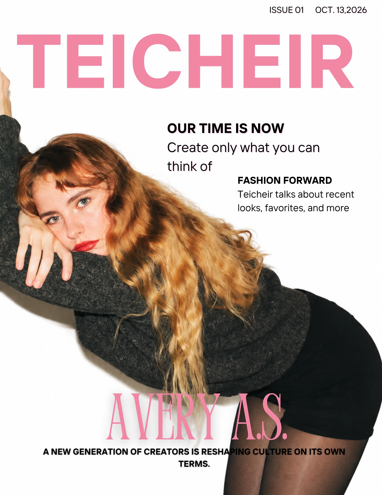

Creative direction · Digital experience
The Teicheir creator hub
A personal archive that turns my content into interactive objects: a newspaper, a magazine, a camera, and a bag of everyday belongings.
- My role
- Brand direction, photography, editorial content, and the creative concept.
- Explore
- Three page-turning editions and a connected home for my channels.